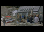
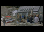
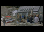

|

| If only everything in life.. |
|
|
|
was as reliable as a VW. |
What to say? Well, I wasn't the driver for one, I was the passenger and, for those of you who drive on the wrong side of the road, the passenger side is the almost completely mangled side. To give you a real idea of just how mangled that car is the windscreen wiper is still in the correct position.
That nice fold through the door and across the roof was done by a tree, which escaped with only minor scuffing. I reached my personal best for the most fracture sites in one go, nose - 3 places, left collarbone - 1 clean break, 1 shattered break, left humerous - 1 main break lengthways plus many fragments, but not the most broken bones in one go which is 22. I also reached my personal best for the most stitches needed for one incident, 11 in my scalp and 19 external + unknown internal to repair the left elbow.
Most of the metalwork that held my arm together has been removed, one large screw remains. It's too deep to remove without major surgery, so is best left in place.
If I ever find the prints I took from my X-rays I'll post them as well.
| Last page update: 5th July, 2006. | e-mail me
 |